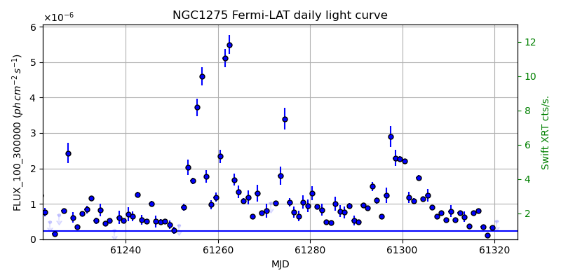
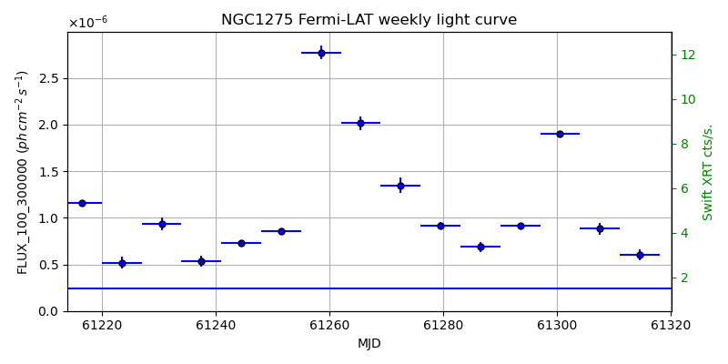
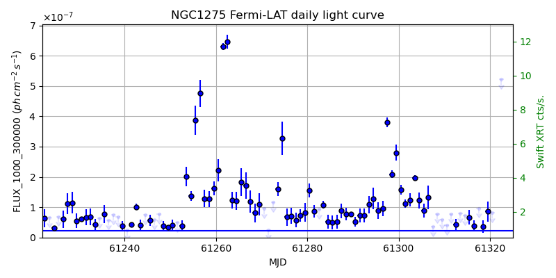
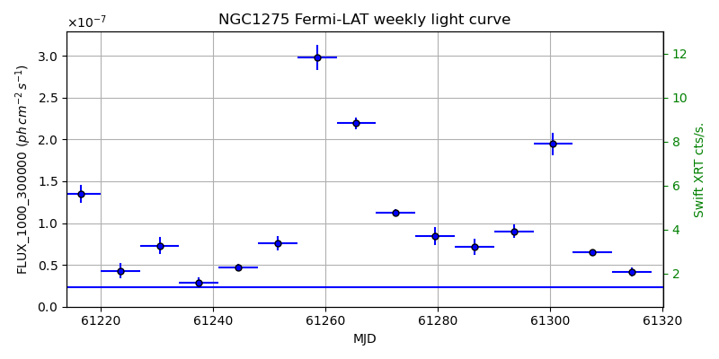

LAT Lightcurve site: https://fermi.gsfc.nasa.gov/ssc/data/access/lat/msl_lc/source/NGC_1275
Swift site: https://www.swift.psu.edu/monitoring/source.php?source=3C84
NED: Query
Time of last update of this page: UT: 2026-10-10 15:13 (MJD: 61323.635)
| Property | Value |
|---|---|
| R.A. | 3:19:48.24 |
| Dec. | 41:30:43.2 |
| z | 0.018 |
| 3FGL SpectrumType | LogParabola |
| 3FGL PL Index | |
| 3FGL Flux_100_300000 | 2.38e-07 1 / (s cm2) |
| 3FGL Flux_1000_300000 | 2.34e-08 1 / (s cm2) |
| 3FGL Flux >200 GeV | 3.81e-11 1 / (s cm2) |
| 3FGL Extrap. Crab >200 GeV | 0.16 |
| 3FGL Flux After EBL Absorption >200GeV | 3.56e-11 1 / (s cm2) |
| 3FGL EBL Crab Fraction >200GeV | 0.15 |

| MJD | dMJD | Flux | dFlux | Frac3FGL | FracCrab>200GeV | EBLFracCrab>200GeV |
|---|---|---|---|---|---|---|
| 61317.50 | 0.50 | 3.53e-07 | 4.27e-08 | 1.48 | 0.24 | 0.22 |
| 61318.50 | 0.50 | 1.09e-07 | 2.88e-08 | 0.46 | 0.07 | 0.07 |
| 61319.50 | 0.50 | 3.28e-07 | 4.53e-08 | 1.38 | 0.22 | 0.21 |
| 61320.50 | 0.50 | 5.03e-07 | 0.00e+00 | 0.00 | 0.00 | 0.00 |
| 61322.50 | 0.50 | 7.85e-06 | 0.00e+00 | 0.00 | 0.00 | 0.00 |

| MJD | dMJD | Flux | dFlux | Frac3FGL | FracCrab>200GeV | EBLFracCrab>200GeV |
|---|---|---|---|---|---|---|
| 61286.50 | 3.50 | 6.87e-07 | 5.69e-08 | 2.89 | 0.47 | 0.44 |
| 61293.50 | 3.50 | 9.12e-07 | 2.39e-08 | 3.83 | 0.62 | 0.58 |
| 61300.50 | 3.50 | 1.91e-06 | 2.81e-08 | 8.01 | 1.29 | 1.21 |
| 61307.50 | 3.50 | 8.82e-07 | 6.27e-08 | 3.71 | 0.60 | 0.56 |
| 61314.50 | 3.50 | 6.00e-07 | 5.71e-08 | 2.52 | 0.41 | 0.38 |

| MJD | dMJD | Flux | dFlux | Frac3FGL | FracCrab>200GeV | EBLFracCrab>200GeV |
|---|---|---|---|---|---|---|
| 61317.50 | 0.50 | 9.67e-08 | 0.00e+00 | 0.00 | 0.00 | 0.00 |
| 61318.50 | 0.50 | 3.57e-08 | 2.06e-08 | 1.52 | 0.25 | 0.23 |
| 61319.50 | 0.50 | 8.56e-08 | 3.24e-08 | 3.66 | 0.59 | 0.55 |
| 61320.50 | 0.50 | 8.14e-08 | 0.00e+00 | 0.00 | 0.00 | 0.00 |
| 61322.50 | 0.50 | 5.22e-07 | 0.00e+00 | 0.00 | 0.00 | 0.00 |

| MJD | dMJD | Flux | dFlux | Frac3FGL | FracCrab>200GeV | EBLFracCrab>200GeV |
|---|---|---|---|---|---|---|
| 61286.50 | 3.50 | 7.18e-08 | 9.51e-09 | 3.07 | 0.50 | 0.47 |
| 61293.50 | 3.50 | 9.03e-08 | 8.23e-09 | 3.86 | 0.62 | 0.58 |
| 61300.50 | 3.50 | 1.95e-07 | 1.35e-08 | 8.32 | 1.34 | 1.25 |
| 61307.50 | 3.50 | 6.57e-08 | 2.89e-09 | 2.80 | 0.45 | 0.42 |
| 61314.50 | 3.50 | 4.17e-08 | 5.23e-09 | 1.78 | 0.29 | 0.27 |
--------------------------------------------------------- Using user-supplied coords: 3:19:48.24 41:30:43.2 2000 --------------------------------------------------------- FLWO UT night of: 2026-10-11 Local Sid. @ Midnight: 00:55 Sunset (-15.0) (local, UT): 19:04 02:04 Sunrise (-15.0) (local, UT): 05:18 12:18 Moonrise (local, UT): Moonset (local, UT): Moon phase: 0.01 --------------------------------------------------------- AzTime LSID UT Obj_el Obj_az Mn_el Mn_az Sep. --------------------------------------------------------- 19:04 19:58 02:04 7.3 44.8 -16.1 264.2 140.5 19:34 20:29 02:34 11.8 48.1 -22.3 267.8 140.7 20:04 20:59 03:04 16.7 51.0 -28.5 271.5 141.0 20:34 21:29 03:34 21.7 53.5 -34.7 275.4 141.2 21:04 21:59 04:04 27.0 55.8 -40.8 279.7 141.5 21:34 22:29 04:34 32.3 57.8 -46.8 284.6 141.7 22:04 22:59 05:04 37.8 59.4 -52.7 290.5 142.0 22:34 23:29 05:34 43.3 60.6 -58.4 297.7 142.3 23:04 23:59 06:04 48.9 61.3 -63.6 307.3 142.6 23:34 00:29 06:34 54.5 61.4 -68.1 320.3 142.8 00:04 00:59 07:04 60.1 60.5 -71.3 338.2 143.1 00:34 01:29 07:34 65.6 58.1 -72.6 0.4 143.4 01:04 01:59 08:04 70.9 52.9 -71.5 22.7 143.7 01:34 02:30 08:34 75.7 42.4 -68.3 40.8 144.0 02:04 03:00 09:04 79.2 21.9 -63.9 54.1 144.3 02:34 03:30 09:34 79.9 350.8 -58.7 63.8 144.6 03:04 04:00 10:04 77.4 324.8 -53.1 71.2 144.9 03:34 04:30 10:34 73.1 310.7 -47.3 77.2 145.2 04:04 05:00 11:04 67.9 303.7 -41.4 82.2 145.4 04:34 05:30 11:34 62.5 300.3 -35.3 86.6 145.7 05:04 06:00 12:04 56.9 298.8 -29.2 90.6 146.0 05:18 06:14 12:18 54.4 298.6 -26.5 92.4 146.1 --------------------------------------------------------- Dark hours >55 deg.: 5.63 srcstart (UT): 2026-10-11 06:36 srcend (UT): 2026-10-11 12:14